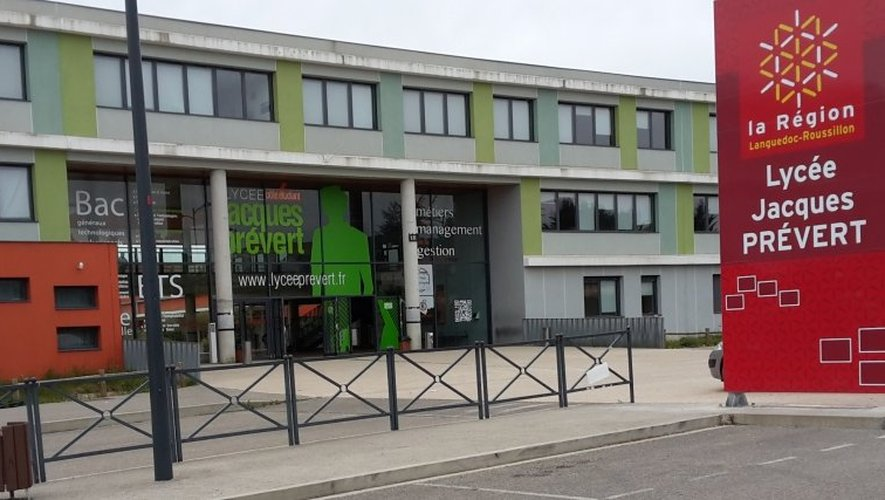
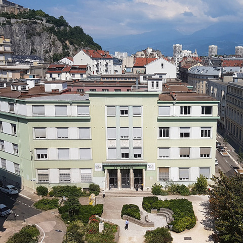
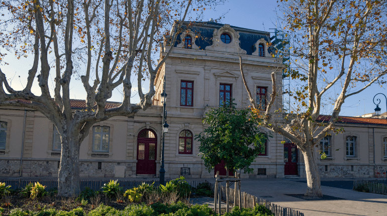

À propos de moi
Je m'appelle LISA ACHOUR. J'ai suivi un parcours au lycée général à Saint-Crisol-les-Ales (30300), où j'ai choisi les spécialités Mathématiques, Physique-Chimie, et NSI (Numérique et Sciences Informatiques). En terminale, j'ai continué avec Mathématiques et NSI, et j'ai obtenu de bons résultats dans ces matières. Mes bonnes performances dans ces spécialités m'ont naturellement orientée vers une formation en lien avec ces domaines. C'est ainsi que j'ai décidé de poursuivre mes études en BUT Informatique.
Ce n'est qu'en première année de BUT que ma passion pour l'informatique est née, car c'était l'occasion pour moi de découvrir toutes les bases de ce domaine. J'ai particulièrement apprécié l'apprentissage des fondamentaux, ce qui m'a permis de mieux comprendre les concepts clés du développement informatique. En deuxième année, j'ai orienté mon parcours vers la spécialité RADV (Réponse aux Attentes des Clients via le Développement Web), après avoir découvert ma véritable passion pour le développement web.
Parcours de formation :
Mon parcours scolaire a commencé avec un baccalauréat général où j'ai suivi les spécialités Mathématiques et NSI. J'ai toujours été intéressée par les matières scientifiques, en particulier l'informatique. Cette orientation m'a amenée à choisir un BUT Informatique, qui s'est révélé être une véritable révélation pour moi. En première année, j'ai appris les bases de l'informatique, ce qui m'a permis de découvrir un univers fascinant, et ma passion pour le développement web a commencé à se dessiner. C'est en deuxième année que j'ai décidé de me spécialiser dans le parcours RADV, car le développement web m'intéressait de plus en plus, notamment le front-end.
Projets professionnels envisagés après le BUT :
Après mon BUT, je souhaite continuer mes études en intégrant une école d'ingénieurs spécialisée dans le développement web ou bien poursuivre un Master dans ce domaine. Mon objectif à long terme est de travailler en tant que développeuse web front-end, car j'ai découvert cette passion lors de mon stage de deuxième année. J'aimerais participer à des projets de développement d'applications web et d'interfaces utilisateurs, et je suis convaincue que le développement front-end correspond parfaitement à mes aspirations professionnelles.
Me contacter
Mon CV
Télécharger mon CVMes Projets


API REST en Symfony
Développement d'une API REST en Symfony pour une gestion centralisée de données (BUT 3).
Voir le projet
Front-end de l'API en Vue.js
Développement du front-end pour l'API REST en Vue.js (BUT 3).
Voir le projetMes Compétences Techniques
HTML/CSS
Création de sites web responsives et modernes.
C
Programmation en C pour les applications bas niveau.
Assembleur
Développement en langage Assembleur pour les systèmes embarqués.
PHP & Symfony
Création d’applications robustes en PHP et Symfony.
Go
Développement backend avec Go.
Docker
Gestion des conteneurs pour le déploiement.
Base de données
SQL, MongoDB, Cassandra, PL/SQL.
Java
Développement d'applications en Java, avec la maîtrise des concepts orientés objets.
Méthodes agiles
Gestion de projet avec les méthodologies Scrum, et Agile.
Mes Compétences Personnelles
Travail d'équipe
Capacité à collaborer efficacement dans un environnement d'équipe pour atteindre des objectifs communs.
Sérieux
Engagement et professionnalisme dans toutes les tâches entreprises, avec une attention particulière aux détails.
Créativité
Capacité à proposer des idées innovantes et à résoudre des problèmes de manière créative.
Organisation
Gestion efficace du temps et des priorités pour respecter les délais et optimiser la productivité.
Adaptabilité
Capacité à ajuster rapidement ses méthodes de travail face aux nouvelles situations ou aux imprévus.
Communication
Excellentes compétences en communication écrite et orale pour une collaboration fluide avec les collègues et clients.
Mon Parcours de Formation
Collège Bellevue
Alès, 30100
2016 - 2019
Obtention du brevet des collège mention Bien.
Lycée Jacques Prevert
Saint-Christol-les-alès, 30300
2019 - 2022
Obtention bac général avec mention Bien. Spécialités : Mathématiques, NSI (Numérique et Sciences Informatiques), et Physique-Chimie.
1ère année BUT Informatique à Grenoble
Grenoble, 38000
2022 - 2023
J'ai intégré le programme du BUT Informatique à Grenoble, où j'ai approfondi mes connaissances en programmation, en algorithmique, et en bases de données.
2e et 3e année BUT Informatique à Montpellier-Sète
Sète, 34200
2023 - 2025
Actuellement en 3e année du BUT Informatique, je me spécialise dans le parcours RACDV (Réalisation d'applications : conception, développement, validation)
Mon Expérience de Stage

Stage Développement Web
Neoteem, 38200, de Avril 2024 - Juillet 2024
Développement de composants vueJS pour la gestion des biens immobiliers.
Voir le projet